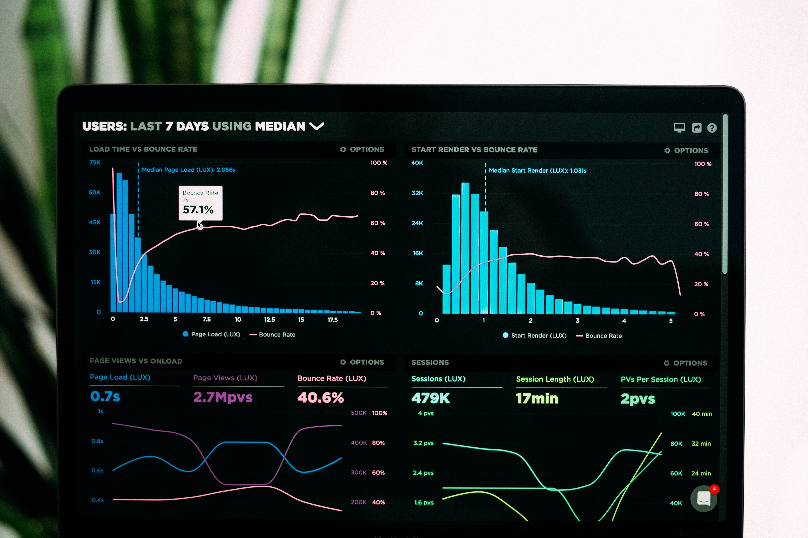

Programming
- Python
- SQL
- Stata
- R
Here you'll find a collection of projects that blend data, strategy, and real-world problem solving. Each one reflects how I approach challenges — with curiosity, structure, and a focus on impact.
You'll also get a glimpse of my professional journey and the methods I use to turn raw data into clear insights. Whether it's modeling, visualization, or analysis, this space brings it all together.
If you're interested in learning more or collaborating, don't hesitate to reach out via the links provided at the bottom of the page.
If something catches your eye or you'd like to collaborate, feel free to reach out through the links below. I'm always open to good conversations and new ideas.

I’m a Data Scientist with a Master’s in Economics from the Federal University of Pernambuco, and I’m currently pursuing a PhD in Computer Engineering, focusing on neural networks and their applications in forecasting and causal inference. I’m passionate about using data to untangle complex problems and turn them into clear, actionable strategies. Right now, I work at Paipe, where I focus on time series modeling to support strategic decisions.
Before that, I honed my skills at Datagro, where I automated data pipelines in Python and ran econometric analyses to uncover financial insights — like returns and price elasticity. At Itaú Unibanco, one of Latin America’s largest banks, I built machine learning models to predict customer satisfaction (NPS) and developed dashboards that improved decision-making in the wholesale sector.
Across all these experiences, one thing has stayed constant: I love creating data-driven solutions that bring real impact. Whether through automation, analytics, or modeling, I aim to combine technical precision with practical results.
You can find my full CV here. My Master’s thesis, published in an international journal, is available here.
Working on forecasting and time series analysis to support decision-making processes;
Automated report data collection with Python, enhancing efficiency and accuracy;
Performed regression analyses to accurately estimate financial returns and assess price elasticity, providing actionable insights for strategic decision-making.
Implemented strategies for improvement of Open Banking for wholesale sector. Also, assisted in collecting data through forms from new customers for sharing in Open Banking.
Analyzed tax calculations, prepared income tax and served in administrative area and advised customers online on debt negotiation.
Taught undergraduate students Regional Economics classes. In addition to it aided undergraduate students with Simple and Multiple Linear Regression Models.
Telemarketing campaigns are more than just a tool for banks to facilitate transactions; they are a strategic approach to attract and retain customers. Financial institutions, like a retail bank in Portugal, use these campaigns to expand their customer base through direct marketing efforts.
This data serves as the foundation for predicting whether customers will choose to save money with the bank, guiding strategic decisions on which features to emphasize for maximizing customer engagement and revenue.

A/B/n testing is a powerful method in web design for optimizing webpage performance. This testing involves comparing multiple variations of a webpage element to identify the most effective design, layout, or content that yields the best results.
By randomly presenting different versions to users, organizations can make data-driven decisions by analyzing user interactions and behaviors. This iterative approach enables teams to refine and tailor web pages for enhanced user experience and increased engagement, making A/B/n testing an invaluable tool for achieving digital success.

Since personal income is influenced by various factors such as age, gender, and year, among others, this project aims to predict people’s income using Random Forest.
The end result was a succinct presentation that encapsulated crucial insights and responses obtained from the analysis, providing a deep comprehension of predicting people's income.
This project involved a data analysis using Python programming, GitHub, and advanced data analytics techniques. The focus was on examining data from Brazilian and foreign tourists visiting the stunning Fernando de Noronha Island between 2010 and 2016. Through meticulous exploration, intriguing patterns and significant correlations were unearthed, shedding light on the tourists' behavior.
The final outcome was a concise presentation encapsulating key insights and answers derived from the analysis, offering a profound understanding of tourist behavior during this period
In this project, the concepts of Python programming, data manipulation, strategic thinking and business logic, along with web development tools, Streamlit and Github, were used to develop a management panel with the main metrics of a delivery marketplace company food in India.
The end result of the project was a panel hosted in a Cloud environment through a link on the web. The panel can be accessed from any device with an Internet connection.

I used Python and Statistics techniques to clean and analyze data related to robberies and willing to map which neighborhoods are most dangerous in the biggest city in Canada. This is a good start to create public policies related to public safety.

A/B testing is a way in which you can check the sales effectiveness of web pages in order to increase a company's ROI. Thus, this project is important to verify metrics in e-Commerce.
Feel free to get in touch